I explore to understand.
I analyse to bring clarity.
I design to solve problems.
By combining curiosity with a grounded approach, I transform complexity into experiences that are easier to understand, use and live with.

About
My work sits at the intersection of user research, strategy and design. I guide projects from discovery to implementation, transforming complexity into practical services, products and digital experiences. Working across multidisciplinary teams, industries and cultures, I use collaborative and human-centred methods to bring together different perspectives and design solutions that respond to real needs.
Today, as a Design Consultant, I continue building on a journey that began with Product Design and Service Design at Politecnico di Milano and has been shaped by international experiences across Scandinavia and Asia. I see every project, collaboration and place as an opportunity to explore, learn and refine the way I understand complexity and the way design can make it easier to navigate.
Beyond design, I'm fascinated by cities as living systems; their rhythms, infrastructure and, above all, the people who bring them to life. Photography is my medium to observe and tell those stories, capturing the small details that reveal the bigger picture.
Explorations (when I'm not working)
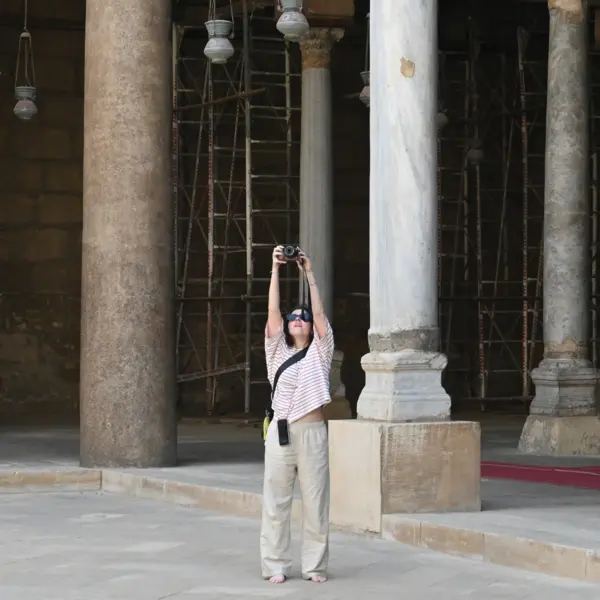
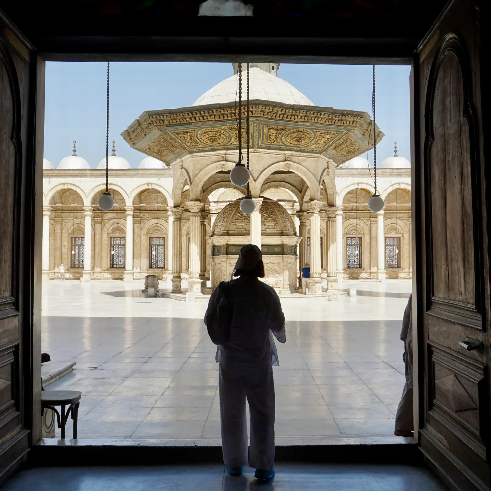
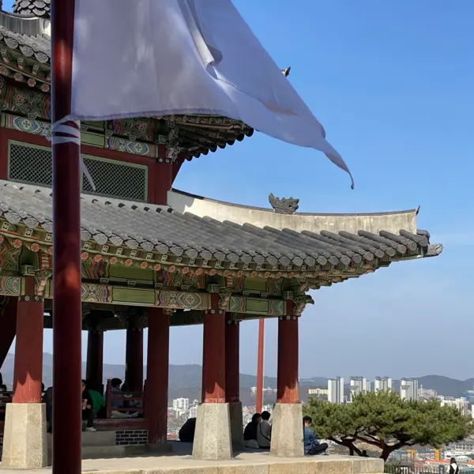
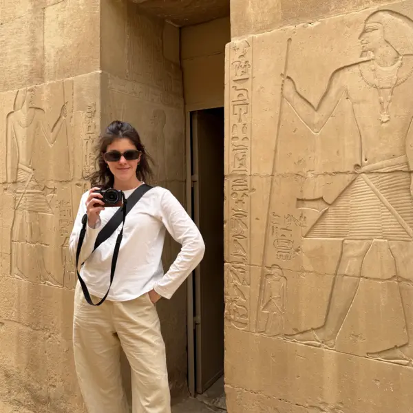
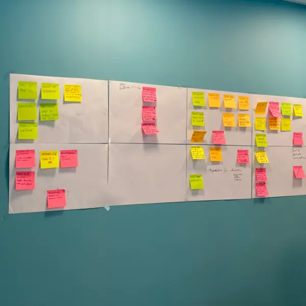
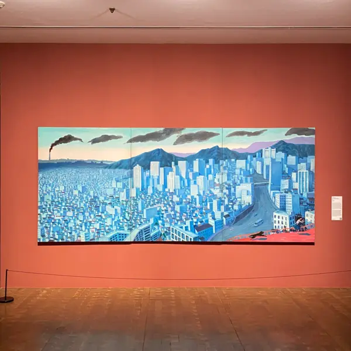
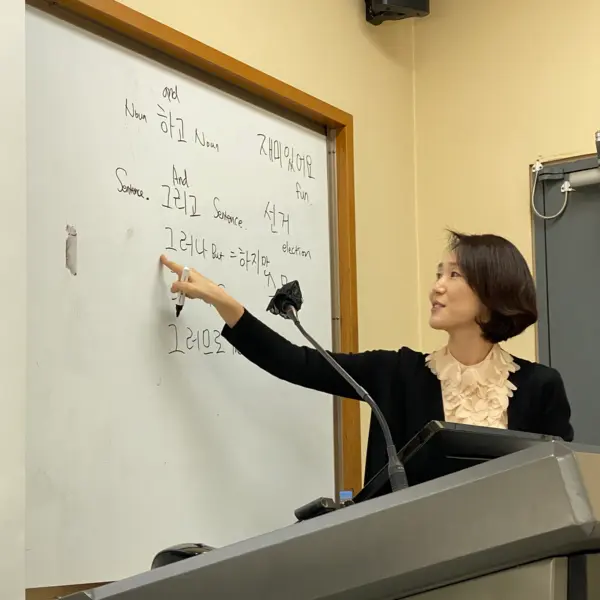
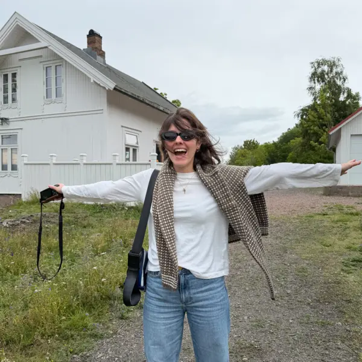
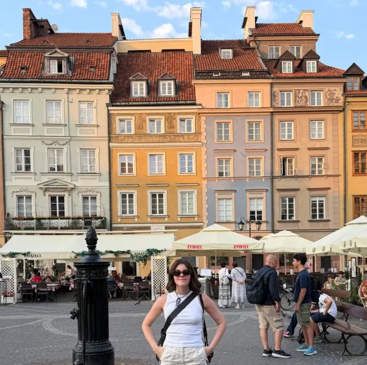
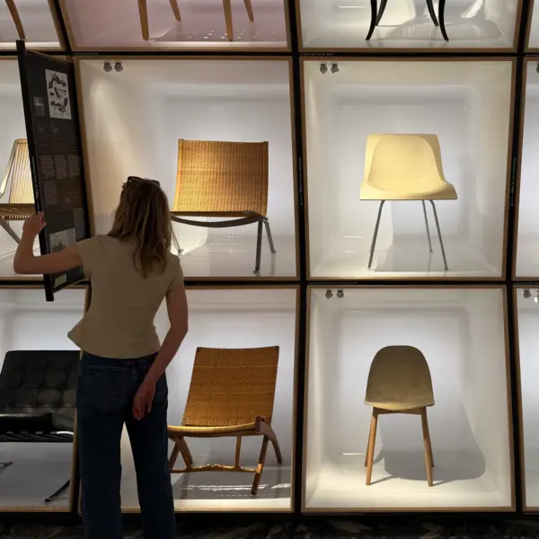
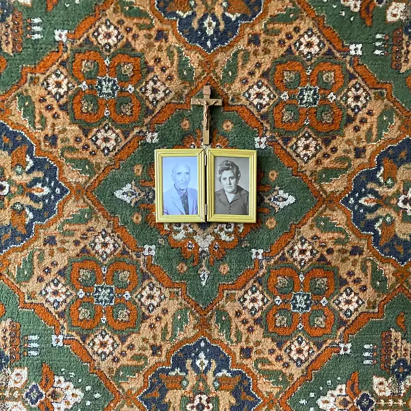
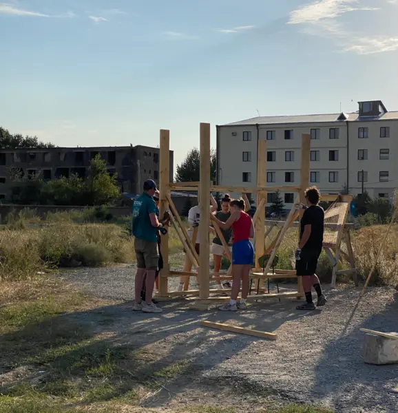
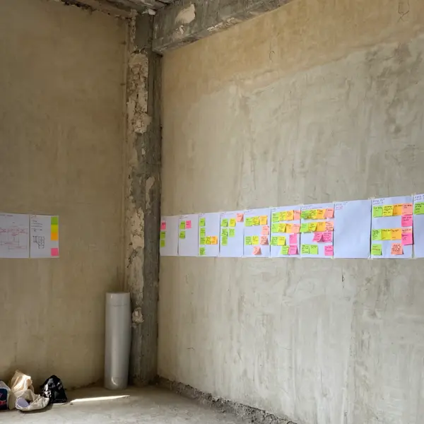
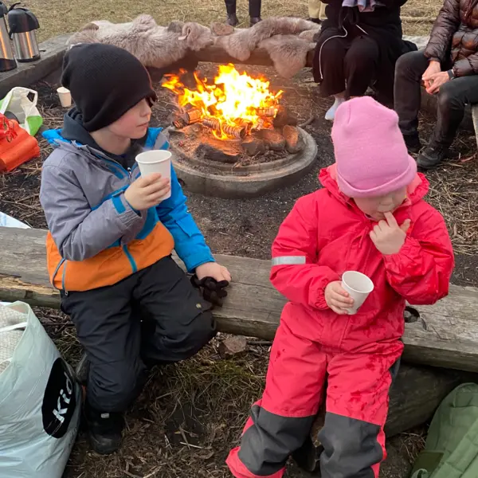
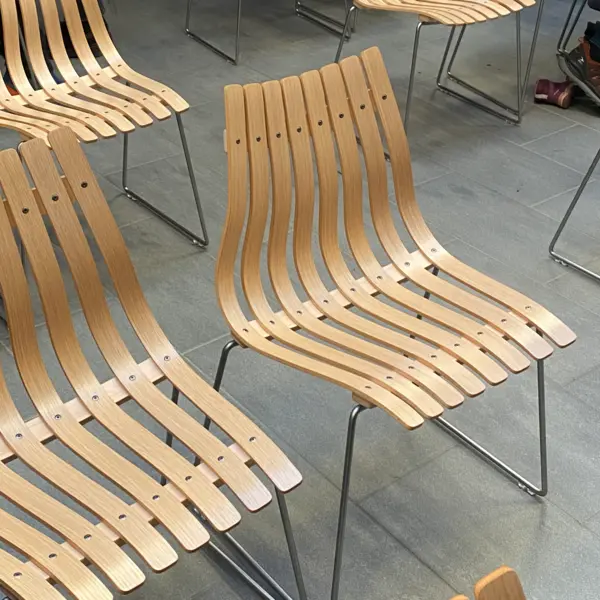
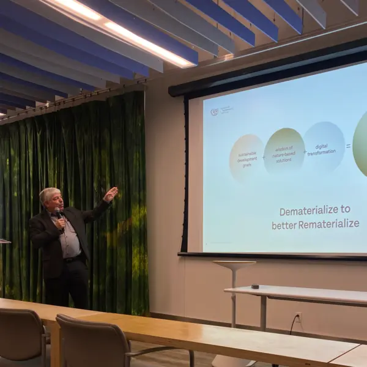
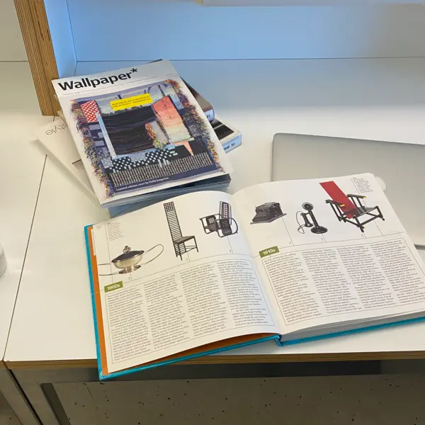
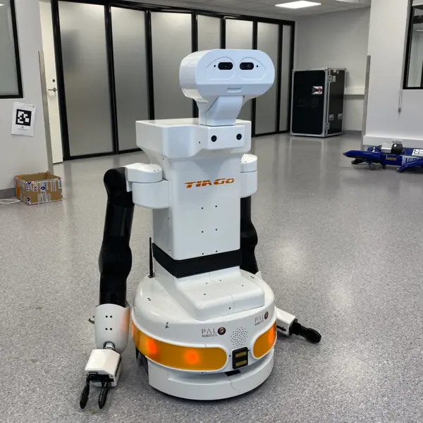